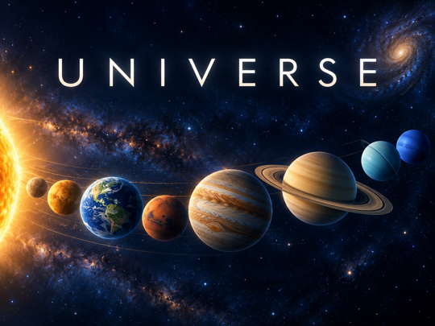
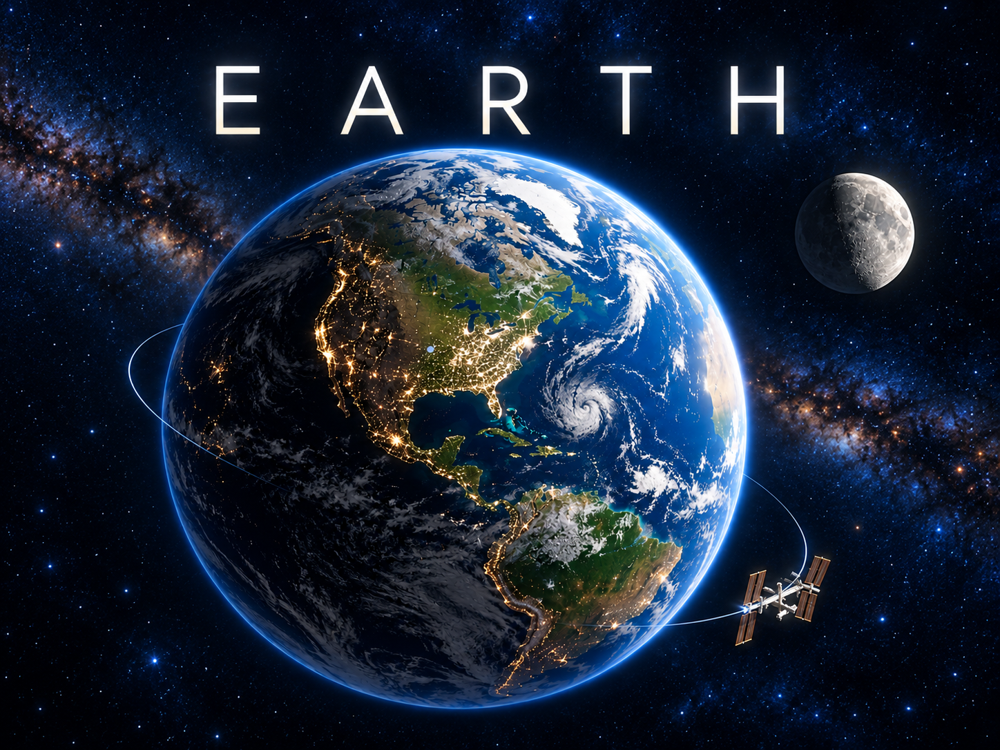

SOLAR SYSTEM · STANDALONE SCREENSAVER
UNIVERSE
A quiet view of the Sun, eight planets and the Moon, alongside your local time and date. Bundled content works offline; sizes and distances are schematic.
Explore UNIVERSEINDEPENDENT / ROKU SCREENSAVERS
Standalone screensavers by Tom Cocozzello.
A place for product information, help and the sources behind each scene.
THE COLLECTION / 02

SOLAR SYSTEM · STANDALONE SCREENSAVER
A quiet view of the Sun, eight planets and the Moon, alongside your local time and date. Bundled content works offline; sizes and distances are schematic.
Explore UNIVERSE
OUR HOME PLANET · IN DEVELOPMENT
A quiet view of Earth with date-based sunlight and Moon phase, warm city lights, subtle stars and locally calculated ISS orbit predictions.
Explore EARTHFind setup help, source acknowledgments and policy information inside each product section. Explore UNIVERSE and the EARTH design preview.
Website hosting is provided by GitHub Pages. GitHub logs visitors’ IP addresses for security purposes. These pages use no analytics, cookies, external fonts or embedded media. GitHub privacy statement.